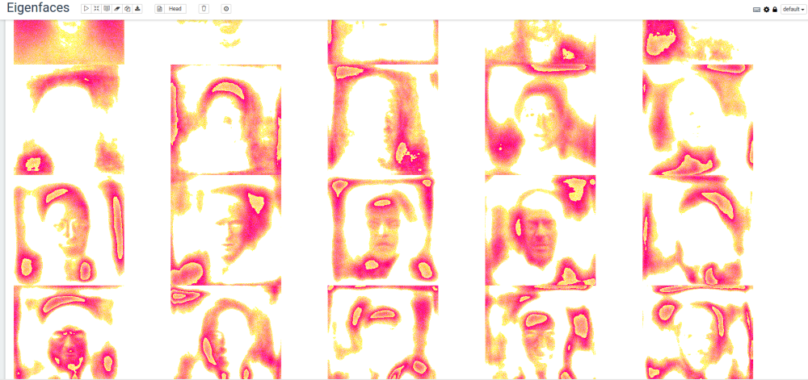

Credit: original blog post by rawkintrevo. This will be maintained through version changes, blog post will not.
Eigenfaces are an image equivelent(ish) to eigenvectors if you recall your high school linear algebra classes. If you don’t recall: read wikipedia otherwise, it is a set of ‘faces’ that by a linear combination can be used to represent other faces.
Their are lots of “image recognition” things out there right now, and deep learning is the popular one everyone is talking about. Deep learning will admittedly do better a recognizing and correctly classifying faces, however it does so at a price.
The advantage/use-case for the eigenfaces approach is when new faces are being regularly added. Even when building a production grade eigenfaces based system- neural networks still have a place- idenitifying faces in images, and creating centered and scaled images around the face. This is scalable because we only need to train our neural network to detect, center, and scale faces once. E.g. a neural network would be deployed as a microservice, and then eigenfaces would be deployed as a microservice.
A production version ends up looking something like this:
The first thing we’re going to do is collect a set of 13,232 face images (250x250 pixels) from the Labeled Faces in the Wild data set.
cd /tmp
mkdir eigenfaces
wget http://vis-www.cs.umass.edu/lfw/lfw-deepfunneled.tgz
tar -xzf lfw-deepfunneled.tgz
cd $MAHOUT_HOME/bin
./mahout spark-shell \
--packages com.sksamuel.scrimage:scrimage-core_2.10:2.1.0, \
com.sksamuel.scrimage:scrimage-io-extra_2.10:2.1.0, \
com.sksamuel.scrimage:scrimage-filters_2.10:2.1.0
import com.sksamuel.scrimage._
import com.sksamuel.scrimage.filter.GrayscaleFilter
val imagesRDD:DrmRdd[Int] = sc.binaryFiles("/tmp/lfw-deepfunneled/*/*", 500)
.map(o => new DenseVector( Image.apply(o._2.toArray)
.filter(GrayscaleFilter)
.pixels
.map(p => p.toInt.toDouble / 10000000)) )
.zipWithIndex
.map(o => (o._2.toInt, o._1))
val imagesDRM = drmWrap(rdd= imagesRDD).par(min = 500).checkpoint()
println(s"Dataset: ${imagesDRM.nrow} images, ${imagesDRM.ncol} pixels per image")
import org.apache.mahout.math.algorithms.preprocessing.MeanCenter
val scaler: MeanCenterModel = new MeanCenter().fit(imagesDRM)
val centeredImages = scaler.transform(imagesDRM)
import org.apache.mahout.math._
import decompositions._
import drm._
val(drmU, drmV, s) = dssvd(centeredImages, k= 20, p= 15, q = 0)
import java.io.File
import javax.imageio.ImageIO
val sampleImagePath = "/home/guest/lfw-deepfunneled/Aaron_Eckhart/Aaron_Eckhart_0001.jpg"
val sampleImage = ImageIO.read(new File(sampleImagePath))
val w = sampleImage.getWidth
val h = sampleImage.getHeight
val eigenFaces = drmV.t.collect(::,::)
val colMeans = scaler.colCentersV
for (i <- 0 until 20){
val v = (eigenFaces(i, ::) + colMeans) * 10000000
val output = new Array[com.sksamuel.scrimage.Pixel](v.size)
for (i <- 0 until v.size) {
output(i) = Pixel(v.get(i).toInt)
}
val image = Image(w, h, output)
image.output(new File(s"/tmp/eigenfaces/${i}.png"))
}
If using Zeppelin, the following can be used to generate a fun table of the Eigenfaces:
%python
r = 4
c = 5
print '%html\n<table style="width:100%">' + "".join(["<tr>" + "".join([ '<td><img src="/tmp/eigenfaces/%i.png"></td>' % (i + j) for j in range(0, c) ]) + "</tr>" for i in range(0, r * c, r +1 ) ]) + '</table>'
